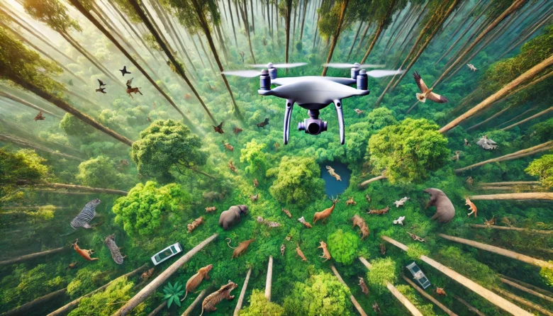
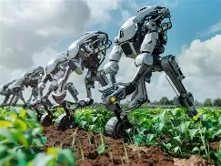
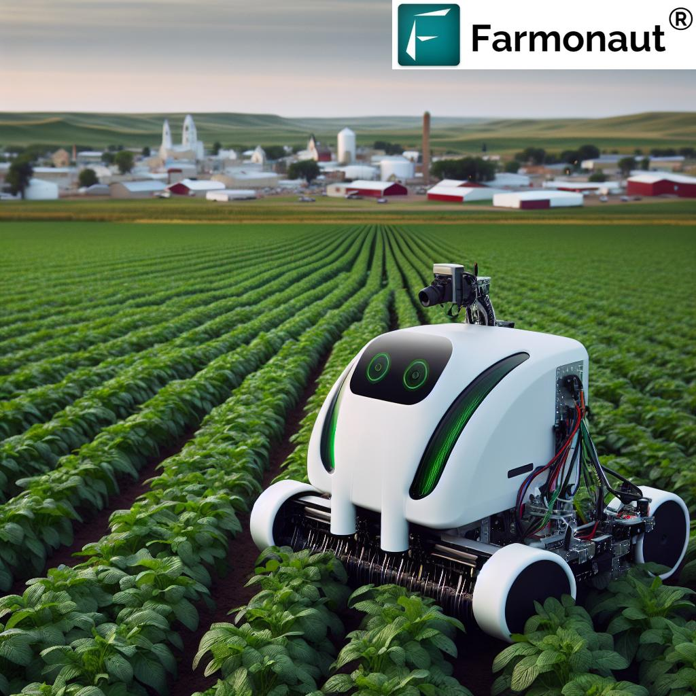
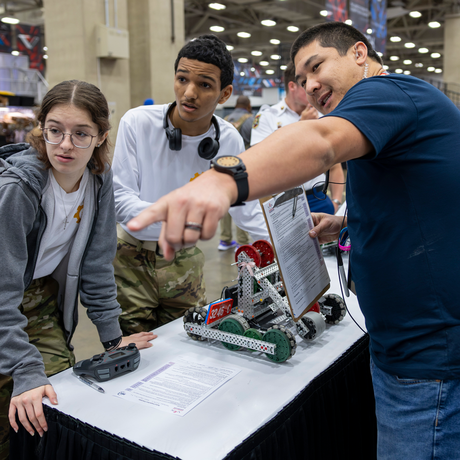
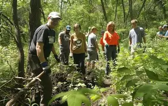

Wildlife Monitoring
Drone and sensor deployment to track and protect endangered species.
Connecting technologists with the organisations protecting Southern Africa's wildlife.
Get Involved

RoboWild is a non-profit alliance of conservationists, robotics engineers and IT specialists working to make technology accessible to animal-welfare organisations. We match volunteer technologists and donated equipment with active field projects, and run training workshops for rangers and animal-care staff.

Drone and sensor deployment to track and protect endangered species.

Low-cost tracking and alert systems built with local ranger teams.


Hands-on robotics and IT skills training for conservation staff.